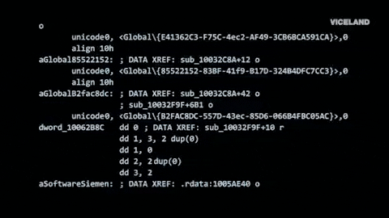

Orisono728⌬ħ

¿Qué estudio?
Estudiante de Ingeniería de Sistemas y Computación ·
Armenia, Quindío, Colombia 🇨🇴
Orisono728 en GitHub · he/him
Seguimos adelante: construyendo, aprendiendo, rompiendo cosas. Algunos
desde la ciencia, otros desde el arte. Yo desde el código.
Sobre mí
Estudiante de Ingeniería de Sistemas y Computación en la Universidad del Quindío. A largo plazo apunto a investigación en Ciencias de la Computación o Física Computacional 🦭.
Mis áreas de interés: computación, física, electrónica, ciberseguridad y sistemas operativos. Trabajo sobre Fedora Linux con KDE Plasma 💎. Creo en el software libre como principio, no como moda.
"Understand the machine. Then build the next one."
Mi entorno
Máquina principal: HP ProDesk 600 G4 (i5-8500)
╭──────────────────────────────────────────────╮
│ Orisono728@fedora │
├──────────────────────────────────────────────┤
│ OS Fedora Linux │
│ DE KDE Plasma 6 │
│ WM KWin · Wayland │
│ Editor VS Code │
│ Shell bash │
│ Terminal Konsole │
│ Theme Tokyo Night │
╰──────────────────────────────────────────────╯
Formación
- Ingeniería de Sistemas y Computación
- Universidad del Quindío · Armenia · 2026–presente 🛠️
- Técnico en Programación de Software
- SENA · completado ✅
Hoja de ruta
- Grado: Ingeniería de Sistemas y Computación · UniQ
- Especialización en Ciberseguridad
- MSc en Ciencias de la Computación
- PhD en Física Computacional
Stack técnico
Lenguajes
- Python
- HTML5
- CSS3
- JavaScript (vanilla · OOP · async)
- TypeScript
Entorno y herramientas
- Fedora Linux · KDE Plasma 6 · Wayland
- VS Code · Git · GitHub
Proyectos
| Proyecto | Descripción | Stack | Estado | Repo |
|---|---|---|---|---|
| 🗂️ Portafolio | Portafolio personal. Experimental y en evolución. | HTML · CSS · JS | 🔄 En desarrollo | Portafolio-Orisono728 |
| 🌐 KernelGarden | Portal web del colectivo indie The KernelGames. | HTML · CSS · JS | 🟢 Live | The-KernelGarden |
| 🐾 Pangolin: The Lost Cap | Aventura indie en desarrollo activo por The KernelGames. | JS · Phaser 3 | 🚧 En desarrollo | The-KernelGames |
| 🎸 The SoundGarden | Tienda de música colombiana. Estética rock oscura. | HTML · CSS | 🔄 En desarrollo | The-SoundGarden-v6.2 |
| Ver todos los repositorios en github.com/Orisono728 | ||||
Organizaciones
- The KernelGames
- Estudio indie universitario del Quindío. Juegos, experimentos y código abierto.
- KernelDynamics
- Software aeroespacial de alta precisión para Unix/Linux. Mecánica orbital y física computacional.

Contacto
- Email: Orisono@proton.me
- GitHub: github.com/Orisono728
Siempre puedes dejarme un comentario: